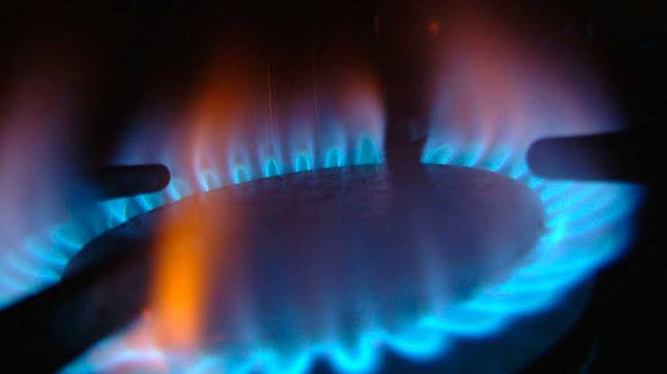

Propiedades físicas del metano: Es una sustancia incolora y no polar,
se presenta como un gas a temperaturas ordinarias y tiene baja solubilidad.
Propiedades químicas del metano: es el combustible fósil más limpio,
es bastante inerte debido a la alta estabilidad de los enlaces C-H
Proceso de la vida cotidiana del metano:
El metano se usa de varias maneras, puede hacer que se queme para generar
una llama con la que cocinar, en industrias que fabrican pulpa o papel,
procesamiento de alimentos y bebidas, compañías petroleras, hacer que el
metano se queme ayuda a secar, desinfectar y derretir sus productos.